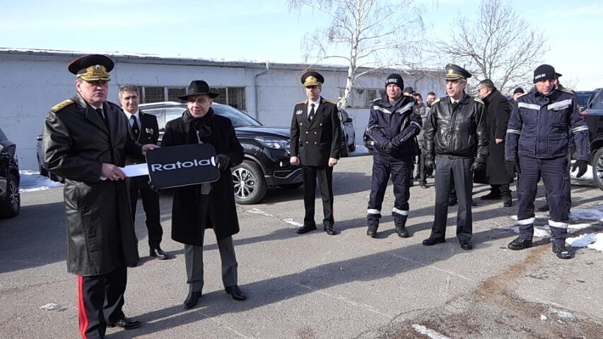

Пожарна Безопасност - област Бургас

Нови 32 мобилни комуникационни
системи получи ГДПБЗН
17 февруари 2021г.
„Закупуването и доставката на тези модерни комуникационни системи по ОП „Околна среда 2014-2020“ е част от по-голям и амбициозен проект. Дейностите по него са насочени към оптимизиране на превенцията, готовността и реагирането при риск от бедствия от природен характер, както и извършване на адекватни анализи и оценки на различните видове риск.“. Това заяви директорът на ГД „Пожарна безопасност и защита на населението“ главен комисар Николай Николов, който получи ключовете на нови 32 мобилни комуникационни системи, тип 1. Кратката церемония се състоя днес в логистичния център на главната дирекция.
Финансирането за закупуването на техниката е осигурено по проект „Интегриране, надграждане и оптимизация на процесите по превенция, готовност и реагиране на рискове от природен характер“ по ОП „Околна среда 2014-2020 г.“. Договорът за доставката на модерните мобилни комуникационни системи на стойност 3 141 232,80 лева с ДДС бе подписан на 25 септември 2020 година и изпълнен предсрочно от изпълнителя по обособената позиция.
Проектът „Интегриране, надграждане и оптимизация на процесите по превенция, готовност и реагиране на рискове от природен характер“ по ОП „Околна среда 2014-2020 г.“ е насочен към оптимизиране на превенцията, готовността и реагирането при риск от бедствия от природен характер (наводнения, свлачища и причинените от тях бедствия), както и извършване на адекватни анализи и оценки на различните видове риск. В рамките му е предвидено проучване и идентифициране на съществуващите локални информационни системи. На база извършеното проучване ще бъде изградена една обща информационна платформа, интегрираща съществуващите локални системи, съвместима с Национална система за управление на водите в реално време (НСУВРB) и с възможност за последваща интеграция с Европейска система за оповестяване на населението.

